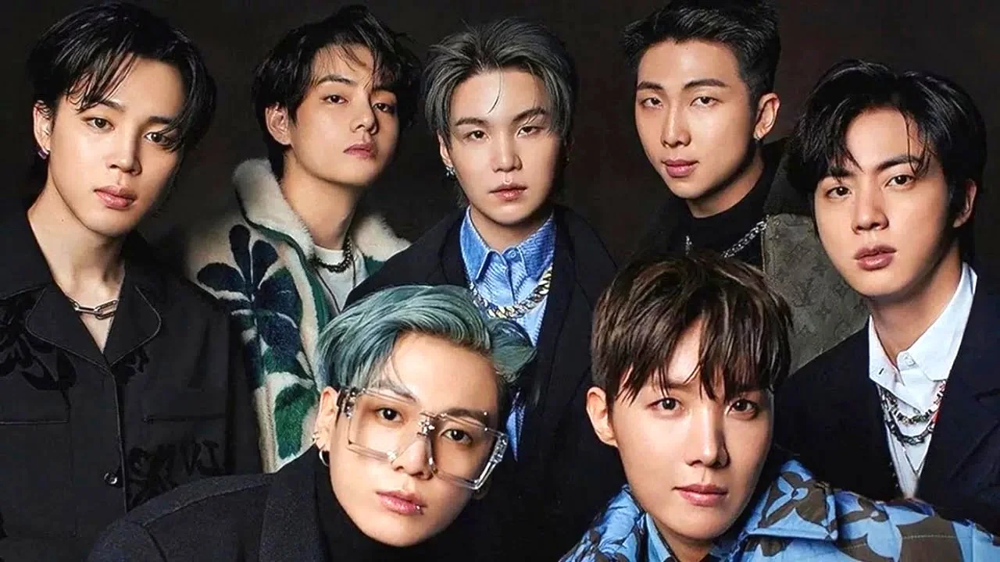

Actualidad
Hoy, BTS se mantiene como uno de los grupos más grandes del planeta. Han roto récords de ventas en plataformas digitales, agotado entradas en estadios mundialmente y participado en premios internacionales, incluyendo una histórica nominación a los Grammy. Más allá de la música, BTS destaca por su compromiso social, especialmente con campañas como #LoveMyself de UNICEF, promoviendo la autoestima y la lucha contra la violencia. Actualmente, algunos miembros están realizando el servicio militar obligatorio, pero el grupo sigue preparando nueva música y proyectos para sus fans alrededor del mundo.